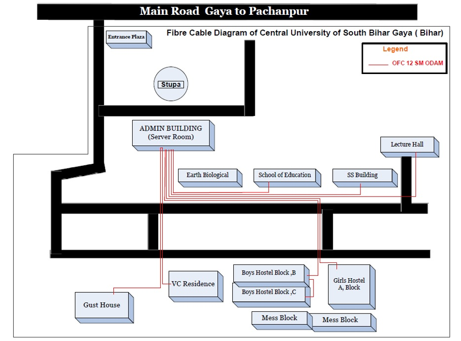

University Wi-Fi Facility
University campus is equipped with high speed Wi-Fi connection. There are two Wi-Fi connections available within the entire campus (including all buildings like Admin, Earth Biological, School of Education, Social Science, LT Hall, Girls Hostel, Boys Hostel, Guest House, VC Residence and all open area of campus). The main Wi-Fi connection named as CUSB1 is supported by the scheme of National Knowledge Network (NKN) implemented by NIC, Government of India. The Other Wi-Fi Connection named as CUSB2 is provided by Department of Information Technology, Government of Bihar under Bharat Net Scheme.

How to Access Wi-Fi?
All the students, faculties and staffs of the university are provided user ID and password, which is common to access the both CUSB1 and CUSB2 Wi-Fi Network. New students/ employee need to submit a form to obtain user ID and password. The form can be obtained from IT cell located in the Room No. 303 (Admin Building), CCL-1, Room No. 137 (Chanakya Bhawan) and CCL-2, Room No. 321 ( Aryabhatta Bhawan). Visitors are also provided short-term Wi-Fi access and they need to request to IT Cell through the hosting department.